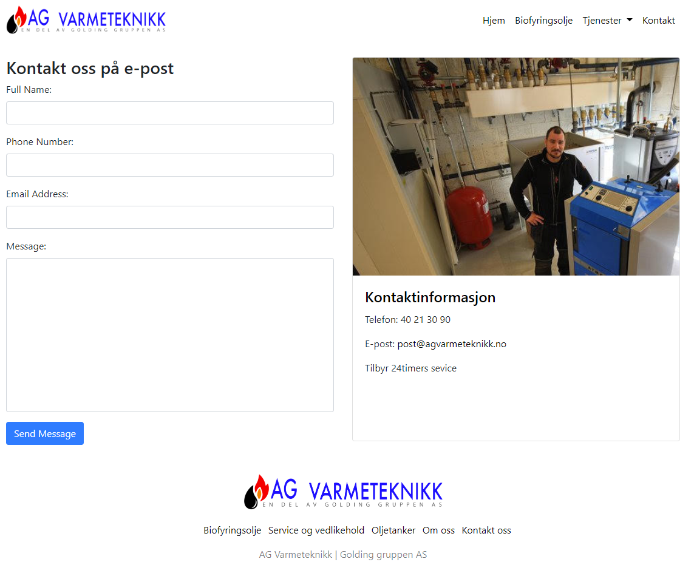

AG-Varmeteknikk
This project is my first encounter with frontend development, I was
asked to design a website for a lokal company from my hometown. I had
never made a website before, so I decided to write the code in plain
HTML and CSS to learn. The company had few requirements to the website
and design. I started by reworking the companys logo in Adobe
illustrator. Furthermore, I applyed the Bootstrap framework to make
the content responsive, as time is scarce.
This prosject gave me a introduction to HTML, CSS and Bootstrap. I
experienced the oppertunity's a framework can give, by speeding up the
development prosess from low- to high-fidelity. I also experienced the
importance of content, by having to communicate information through
pictures and text. The oppertunity of making a website for a real
company was an stepping stone that motivated me to learning more about
the front-end world.

Here's the link to the website :
AG-Varmeteknikk